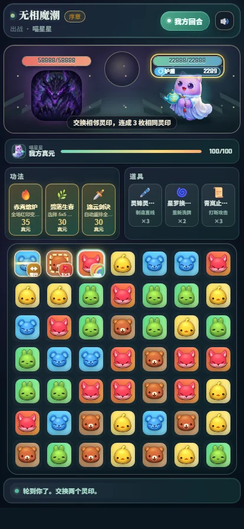
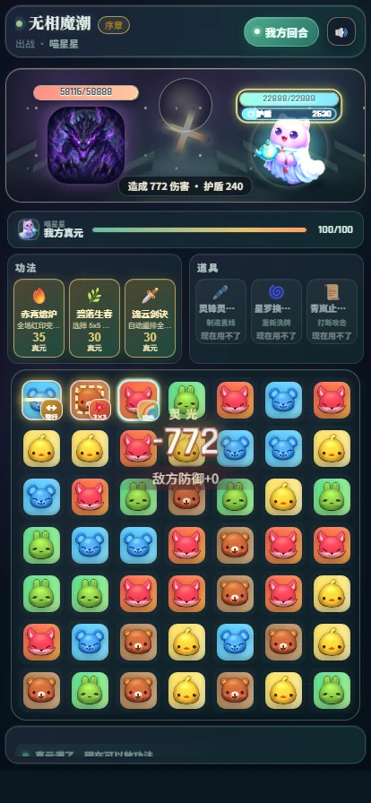
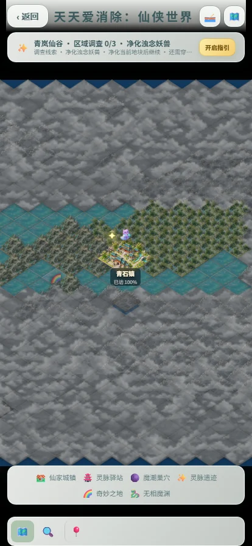
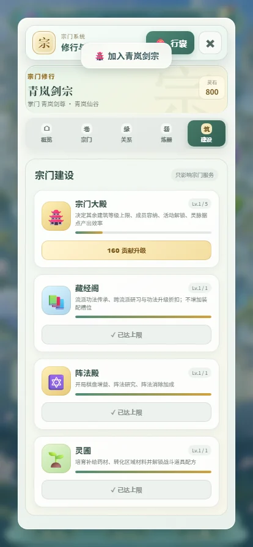

← 返回作品集网页玩法原型 · 2026仙侠世界 · 三消玩法原型这是一个仙侠主题的三消对战原型。玩家和 Boss 轮流在同一块棋盘上消除，地图串起战斗与养成。战斗里最重要的资源是下一手的棋面。双方共享同一个棋盘实例和连锁结算逻辑，一次消除同时改变本轮攻防和对手下一轮的可行交换。棋盘状态如何进入战斗回合棋盘交换灵印检查有效组合连锁消除掉落、补位、再匹配结算结果元素数量与连击战斗攻防结算应用消除结果交接棋面保留剩余布局Boss 选步预告后执行交换放大查看 ↗原型实机 · 地图、战斗与阵容地图、战斗与阵容取自玩法原型。正文保留 Boss 战录像和结算后的攻防反馈。共享棋盘与回合所有权地图探索与养成结构共享棋盘与回合所有权一次交换影响两个回合玩家和 Boss 在同一块棋盘上轮换。一次交换的价值由两件事共同决定：这轮能结算多少攻防，以及掉落补位后给对手留下什么。Boss 的落子预告显示起点与终点；执行前会复核这次交换是否仍然有效。Boss 对战实录节选 · 24 秒放大查看 ↗序章教学 · 我方与 Boss 共用一块棋盘。放大查看 ↗结算反馈 · 连锁后可看到攻击和护盾变化。连锁求解和攻防结算Match3 处理交换、匹配与掉落。固定障碍把每列分成独立的下落区间；元素、特殊棋子和格内状态随位置一起更新。连锁结算返回按元素统计的数量、总数、连击和特殊事件。战斗层订阅连锁反馈，再将最终结果用于攻防结算。Boss 优先复用预告缓存的合法落子，交换后调用同一套连锁求解，下一方接手结算完的棋面。地图探索与养成结构角色靠近后，地图才揭开周围云雾。城镇补给、遗迹探索、灵兽阵容和宗门传承分别承担资源补充、事件发现与战前配置，战斗界面集中呈现棋面和双方状态。放大查看 ↗地图探索 · 角色走近后，周围地形才逐步显露。放大查看 ↗阵容 · 出战伙伴与待选伙伴分开展示。放大查看 ↗宗门 · 驻地串联传承与养成。
 放大查看 ↗放大查看 ↗
放大查看 ↗放大查看 ↗